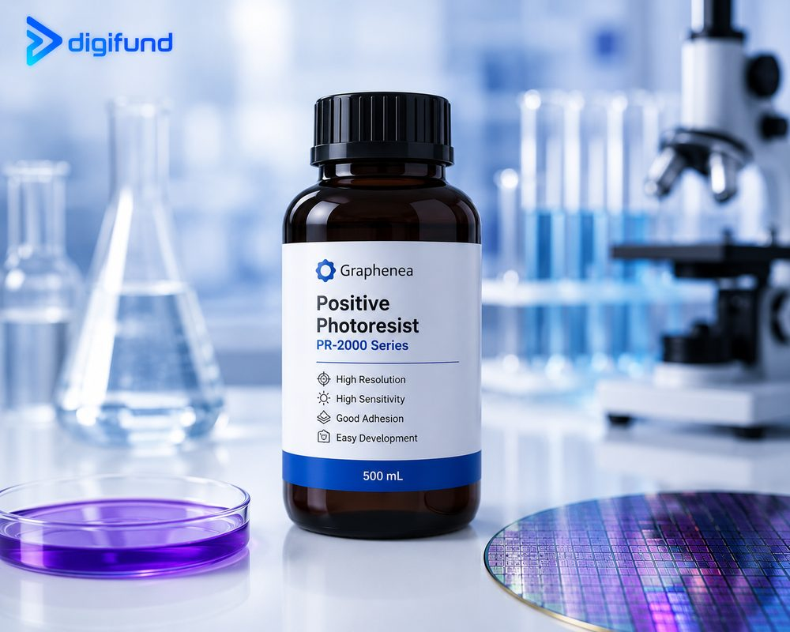
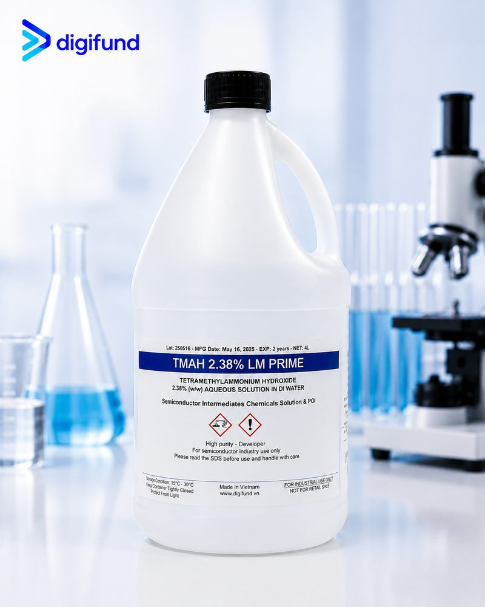

Nội dung chính
Contents
1. Photoresist là gì?
1. What is photoresist?
Photoresist (chất cản quang) là lớp polymer nhạy sáng được phủ lên wafer, thường bằng spin coating. Khi chiếu sáng qua mask, vùng bị chiếu thay đổi độ hoà tan trong developer; sau khi hiện hình, phần resist còn lại đóng vai trò mặt nạ cho bước ăn mòn, cấy ion, mạ hoặc lift-off. Toàn bộ chuỗi bước được giải thích trong bài quy trình quang khắc (photolithography).
Photoresist is a light-sensitive polymer film coated onto a wafer, usually by spin coating. When it is exposed through a mask, the exposed areas change their solubility in the developer; after development, the remaining resist acts as a mask for etching, ion implantation, plating or lift-off. The whole sequence is explained in the photolithography process.

2. Photoresist dương và âm
2. Positive vs negative photoresist
Với photoresist dương, vùng được chiếu sáng trở nên dễ tan và bị developer hoà tan, nên mẫu trên wafer giống mẫu trên mask. Với photoresist âm, vùng được chiếu sáng bị khâu mạch (crosslink) và giữ lại, nên mẫu là ảnh đảo của mask.
With a positive photoresist, exposed areas become soluble and are removed by the developer, so the pattern on the wafer matches the mask. With a negative photoresist, exposed areas crosslink and stay, so the pattern is the inverse of the mask.
| Tiêu chíCriterion | Photoresist dươngPositive resist | Photoresist âmNegative resist |
|---|---|---|
| Vùng được chiếu sángExposed area | Bị hoà tan khi hiện hìnhDissolves in the developer | Được giữ lại sau hiện hìnhRemains after development |
| Mẫu so với maskPattern vs mask | Giống maskSame as the mask | Đảo ngược maskInverse of the mask |
| Ví dụ Digifund cung cấpExamples Digifund supplies | AZ1512, AZ1518, AZ1502 | N1400, SU-8 |
| Developer thường dùngTypical developer | Developer kiềm gốc TMAHTMAH-based alkaline developer | Tuỳ loại; SU-8 dùng dung môi gốc PGMEADepends on the resist; SU-8 uses a PGMEA-based solvent |
| Thế mạnhStrengths | Kiểm soát kích thước tốt, dễ tẩyGood dimension control, easy to strip | Mẫu bền, lớp dày, biên dạng hợp cho lift-offDurable patterns, thick layers, lift-off profiles |
Dòng AZ 1500 (AZ1512, AZ1518, AZ1502) là các resist dương phổ biến cho phòng lab, khác nhau chủ yếu ở độ nhớt và do đó ở độ dày màng thu được tại cùng một tốc độ quay. Photoresist âm như N1400 thường được chọn khi bước tiếp theo là lift-off kim loại hoặc khi cần mẫu chịu được quá trình xử lý mạnh hơn. Đường cong độ dày theo tốc độ quay và điều kiện nung, chiếu sáng nằm trong datasheet của từng sản phẩm.
The AZ 1500 series (AZ1512, AZ1518, AZ1502) are widely used positive resists for labs; they differ mainly in viscosity and therefore in the film thickness obtained at a given spin speed. A negative resist such as N1400 is often chosen when the next step is metal lift-off or when the pattern must survive harsher processing. Spin curves and bake and exposure conditions are given in each product datasheet.
3. SU-8 và photoresist dày
3. SU-8 and thick resists
SU-8 photoresist là resist âm gốc epoxy, khuếch đại hoá học, được chiếu sáng ở vùng UV gần (i-line 365 nm). Chỉ với một lớp phủ, SU-8 có thể đạt từ dưới 1 µm tới hàng trăm µm tuỳ độ nhớt, với thành mẫu gần thẳng đứng và tỉ lệ cạnh cao. Vì vậy SU-8 được dùng nhiều cho MEMS, khuôn vi lưu (microfluidics) và cấu trúc vĩnh viễn.
SU-8 photoresist is an epoxy-based, chemically amplified negative resist exposed in the near UV (i-line, 365 nm). In a single coat it can range from below 1 µm to hundreds of µm depending on viscosity, with near-vertical sidewalls and high aspect ratios. That is why SU-8 is widely used for MEMS, microfluidic moulds and permanent structures.
- Cần nung sau chiếu sáng (post-exposure bake) để hoàn tất phản ứng khâu mạch.
- Hiện hình bằng dung môi gốc PGMEA, không dùng developer TMAH.
- Sau khi khâu mạch hoàn toàn, SU-8 rất khó tẩy; hãy tính trước nếu cần loại bỏ lớp này.
- It needs a post-exposure bake to complete crosslinking.
- It is developed in a PGMEA-based solvent, not in TMAH developer.
- Once fully crosslinked, SU-8 is very hard to strip; plan ahead if the layer must be removed.
Photoresist dày (Thick PR) là nhóm resist cho màng từ vài µm trở lên, dùng làm khuôn mạ (bump, cột đồng), mặt nạ ăn mòn sâu hoặc khi bề mặt có bậc địa hình lớn. Màng dày cần thời gian nung và hiện hình dài hơn, và liều chiếu cao hơn màng mỏng.
Thick photoresists (Thick PR) cover films of several µm and above, used as plating moulds (bumps, copper pillars), deep-etch masks or over strong surface topography. Thick films need longer bake and development times and a higher exposure dose than thin films.
4. Cách chọn photoresist
4. How to choose a photoresist
- Bước sóng chiếu sáng. Resist phải nhạy ở bước sóng thiết bị của bạn phát ra. Mask aligner dùng đèn thuỷ ngân phát các vạch g-line, h-line, i-line; máy laser writer thường dùng một bước sóng đơn trong vùng 375–405 nm; quang khắc DUV cần resist riêng cho 248 nm hoặc 193 nm.
- Độ phân giải. Kích thước mẫu nhỏ nhất phụ thuộc cả resist lẫn thiết bị. Resist mỏng hơn thường cho mẫu nhỏ hơn; với mask aligner tiếp xúc, giới hạn thực tế thường nằm quanh mức micromet.
- Độ dày màng. Chọn theo yêu cầu của bước kế tiếp: đủ dày để chịu ăn mòn khô, dày hơn đáng kể lớp kim loại khi lift-off, hoặc bằng chiều cao cấu trúc khi làm khuôn mạ hay SU-8.
- Quy trình sau quang khắc. Ăn mòn ướt, ăn mòn khô, lift-off, mạ hay cấu trúc vĩnh viễn đều ưu tiên loại resist khác nhau (xem bảng dương/âm ở trên).
- Tương thích hoá chất. Developer và stripper phải đi đúng với resist: resist dương dùng developer TMAH, SU-8 dùng developer dung môi. Chọn cả bộ cùng lúc để tránh sai lệch quy trình.
- Exposure wavelength. The resist must be sensitive at the wavelength your tool emits. Mask aligners use mercury lamps with g-line, h-line and i-line emission; laser writers usually use a single wavelength in the 375–405 nm range; DUV lithography needs dedicated 248 nm or 193 nm resists.
- Resolution. The smallest feature depends on both resist and tool. Thinner resist generally resolves smaller features; with a contact mask aligner the practical limit is usually around the micrometre level.
- Film thickness. Choose it for the next step: thick enough to survive dry etching, clearly thicker than the metal for lift-off, or as tall as the structure for plating moulds and SU-8.
- Downstream process. Wet etch, dry etch, lift-off, plating and permanent structures each favour different resists (see the positive/negative table above).
- Chemical compatibility. Developer and stripper must match the resist: positive resists use TMAH developer, SU-8 uses a solvent developer. Choose the whole set together to avoid process drift.
| Nguồn sángExposure line | Bước sóngWavelength | Thường gặp ởTypical use |
|---|---|---|
| g-line | 436 nm | Đèn thuỷ ngân, mask alignerMercury lamp, mask aligner |
| h-line | 405 nm | Đèn thuỷ ngân, một số laser writerMercury lamp, some laser writers |
| i-line | 365 nm | Đèn thuỷ ngân, stepper i-line, SU-8Mercury lamp, i-line steppers, SU-8 |
| KrF (DUV) | 248 nm | Laser excimer, cần resist DUV và thường dùng ARCExcimer laser, needs DUV resist and usually ARC |
| ArF (DUV) | 193 nm | Laser excimer, sản xuất tiên tiếnExcimer laser, advanced manufacturing |
5. Bộ hoá chất quang khắc Digifund cung cấp
5. The lithography chemistry Digifund supplies
Digifund cung cấp đủ các nhóm vật tư cho một quy trình quang khắc hoàn chỉnh, thuộc mục "Vật liệu quang khắc" trong nhóm vật liệu chế tạo bán dẫn:
Digifund supplies every material group needed for a complete lithography process, listed under "Lithography materials" in the semiconductor fabrication materials group:
| NhómGroup | Sản phẩmProducts | Vai tròRole |
|---|---|---|
| Photoresist dươngPositive photoresists | AZ1512, AZ1518, AZ1502 | Mẫu micro, ăn mòn ướt và khôMicro-patterning, wet and dry etch masks |
| Photoresist âmNegative photoresist | N1400 | Mẫu ảnh đảo, lift-offInverse patterns, lift-off |
| SU-8 | SU-8 | Cấu trúc dày, tỉ lệ cạnh cao, MEMS, khuôn vi lưuThick, high-aspect-ratio structures, MEMS, microfluidic moulds |
| Photoresist dàyThick photoresist | Thick PR | Khuôn mạ, ăn mòn sâu, bề mặt có bậc lớnPlating moulds, deep etch, strong topography |
| DeveloperDevelopers | AZ300-MIF, TMAH 2.38%, MF-319 | Hiện hình resist dương, gốc TMAH không chứa ion kim loạiDeveloping positive resists; TMAH-based, metal-ion-free |
| Chất tăng bám dínhAdhesion promoter | HMDS | Biến bề mặt Si/SiO2 thành kỵ nước để resist bám tốtMakes Si/SiO2 surfaces hydrophobic so the resist adheres |
| StripperStrippers | SVC series, PGMEA | Tẩy resist sau quang khắc; PGMEA còn dùng để rửa và xử lý gờ mépRemoving resist after lithography; PGMEA is also used for rinsing and edge-bead removal |
| Lớp chống phản xạAnti-reflective coatings | DUV ARC, BARC | Giảm phản xạ từ đế và sóng đứng, nhất là ở quang khắc DUVReducing substrate reflection and standing waves, especially in DUV lithography |
TMAH 2,38% là nồng độ developer tiêu chuẩn của ngành cho resist dương. Developer không chứa ion kim loại (metal-ion-free, MIF) được ưu tiên trong quy trình bán dẫn vì không để lại ion natri hay kali trên wafer.
TMAH 2.38% is the industry-standard developer concentration for positive resists. Metal-ion-free (MIF) developers are preferred in semiconductor processing because they leave no sodium or potassium ions on the wafer.

6. Thiết bị đi kèm: spin coater, mask aligner
6. Matching tools: spin coater, mask aligner
Hoá chất chỉ cho kết quả ổn định khi đi cùng thiết bị phù hợp. Digifund cũng cung cấp spin coater để phủ resist đồng đều, mask aligner và direct laser writer để chiếu sáng, cùng tủ hút và wet bench cho bước hiện hình và tẩy. Xem tại thiết bị phòng sạch & công nghệ cao. Nếu cần wafer để chạy quy trình, xem silicon wafer & substrate.
Chemicals give stable results only with the right tools. Digifund also supplies spin coaters for uniform resist coating, mask aligners and direct laser writers for exposure, plus fume hoods and wet benches for developing and stripping. See cleanroom & lab equipment. If you need wafers to run the process, see silicon wafers & substrates.
7. Bảo quản, thao tác và an toàn
7. Storage, handling and safety
- Bảo quản: giữ resist trong chai kín, tránh ánh sáng và nguồn nhiệt, ở nhiệt độ ghi trên datasheet; một số loại cần bảo quản lạnh. Để chai về nhiệt độ phòng trước khi mở để tránh hơi ẩm ngưng tụ vào resist.
- Hạn dùng: resist có hạn sử dụng; độ nhạy và độ nhớt thay đổi theo thời gian. Ghi ngày mở chai và dùng theo thứ tự nhập trước dùng trước.
- Ánh sáng làm việc: thao tác dưới đèn vàng (lọc bỏ UV) để resist không bị chiếu sáng ngoài ý muốn.
- Dung môi dễ cháy: resist và PGMEA chứa dung môi hữu cơ dễ cháy; dùng trong tủ hút, xa nguồn lửa.
- TMAH độc: developer TMAH, kể cả ở nồng độ loãng, độc khi tiếp xúc với da. Luôn đeo găng tay chịu hoá chất, kính bảo hộ và áo choàng; rửa ngay bằng nhiều nước nếu dính.
- SDS và chất thải: đọc phiếu an toàn hoá chất (SDS) trước khi dùng và xử lý chất thải dung môi, developer theo quy định về chất thải nguy hại.
- Storage: keep resist in closed bottles, away from light and heat, at the temperature on the datasheet; some types need refrigeration. Let the bottle reach room temperature before opening so moisture does not condense into the resist.
- Shelf life: resists have a limited shelf life; sensitivity and viscosity drift over time. Mark the opening date and use stock first in, first out.
- Work lighting: handle resist under yellow (UV-filtered) light to avoid unintended exposure.
- Flammable solvents: resists and PGMEA contain flammable organic solvents; use them in a fume hood, away from ignition sources.
- TMAH is toxic: TMAH developer is toxic on skin contact, even when dilute. Always wear chemical-resistant gloves, goggles and a lab coat; rinse with plenty of water immediately after contact.
- SDS and waste: read the safety data sheet (SDS) before use and dispose of solvent and developer waste under hazardous-waste regulations.
Wafer cần sạch và khô trước khi phủ HMDS và resist; quy trình làm sạch được trình bày trong làm sạch wafer theo quy trình RCA.
Wafers must be clean and dry before HMDS and resist coating; the cleaning sequence is covered in RCA wafer cleaning.
8. Cách yêu cầu báo giá
8. How to request a quote
Để Digifund đề xuất đúng sản phẩm và báo giá chính xác, hãy gửi các thông tin sau:
For Digifund to propose the right product and quote accurately, send the following:
- Tên sản phẩm (ví dụ AZ1518, SU-8) hoặc loại resist mong muốn (dương, âm, dày).
- Độ dày màng mục tiêu và kích thước mẫu nhỏ nhất.
- Thiết bị chiếu sáng và bước sóng (mask aligner, laser writer, i-line, DUV...).
- Loại đế và kích thước wafer.
- Bước xử lý sau quang khắc: ăn mòn ướt, ăn mòn khô, lift-off, mạ hay cấu trúc vĩnh viễn.
- Số lượng, dung tích chai, và developer, HMDS, stripper hoặc ARC đi kèm nếu cần.
- Địa chỉ giao hàng và tài liệu cần kèm theo, ví dụ SDS hoặc datasheet.
- Product name (for example AZ1518, SU-8) or the resist type you want (positive, negative, thick).
- Target film thickness and smallest feature size.
- Exposure tool and wavelength (mask aligner, laser writer, i-line, DUV...).
- Substrate type and wafer size.
- The step after lithography: wet etch, dry etch, lift-off, plating or permanent structure.
- Quantity, bottle size, and any developer, HMDS, stripper or ARC you need with it.
- Delivery address and the documents you need, such as SDS or datasheet.
Gửi yêu cầu qua form liên hệ, email semiconductor@digifund.vn hoặc điện thoại +84 979 324 567.
Send your request through the contact form, by email to semiconductor@digifund.vn or by phone on +84 979 324 567.
Câu hỏi thường gặp
Frequently asked questions
Digifund có cung cấp photoresist tại Việt Nam không?Does Digifund supply photoresist in Vietnam?
Có. Digifund cung cấp photoresist dương (AZ1512, AZ1518, AZ1502), photoresist âm (N1400), SU-8 và photoresist dày, cùng developer, HMDS, stripper và lớp chống phản xạ cho phòng lab và nhà máy tại Việt Nam. Gửi thông số quy trình để nhận báo giá.
Yes. Digifund supplies positive photoresists (AZ1512, AZ1518, AZ1502), negative photoresist (N1400), SU-8 and thick resists, together with developers, HMDS, strippers and anti-reflective coatings for labs and fabs in Vietnam. Send your process details to get a quote.
Nên chọn photoresist dương hay âm?Should I choose a positive or a negative photoresist?
Photoresist dương (như dòng AZ 1500) là lựa chọn mặc định cho ăn mòn ướt, ăn mòn khô và đa số mẫu micro vì dễ kiểm soát kích thước và dễ tẩy. Photoresist âm phù hợp khi cần thành mẫu bền, lớp dày hoặc biên dạng phù hợp cho lift-off. Quyết định cuối cùng phụ thuộc vào mask, thiết bị chiếu sáng và bước xử lý tiếp theo.
Positive resists such as the AZ 1500 series are the default for wet etch, dry etch and most micro-patterning because critical dimensions are easy to control and the resist strips easily. Negative resists suit durable patterns, thick layers or lift-off profiles. The final choice depends on your mask polarity, exposure tool and the next process step.
SU-8 dùng developer gì?What developer does SU-8 use?
SU-8 là resist âm gốc epoxy và thường được hiện hình bằng dung môi gốc PGMEA, không dùng developer TMAH như resist dương. Sau khi đã khâu mạch (crosslink), SU-8 rất khó tẩy, nên thường được dùng làm cấu trúc vĩnh viễn hoặc khuôn.
SU-8 is an epoxy-based negative resist and is normally developed in a PGMEA-based solvent developer, not in the TMAH developers used for positive resists. Once crosslinked, SU-8 is very hard to strip, so it is usually used as a permanent structure or a mould.
Cần gửi thông tin gì để nhận báo giá photoresist?What information should I send to get a photoresist quote?
Hãy gửi tên sản phẩm hoặc loại resist, độ dày màng và kích thước mẫu nhỏ nhất mong muốn, bước sóng chiếu sáng của thiết bị, loại đế, quy trình sau quang khắc, số lượng, dung tích chai và developer hoặc stripper đi kèm nếu cần.
Send the product name or resist type, target film thickness and smallest feature size, your exposure wavelength, substrate type, the process after lithography, quantity and bottle size, and any matching developer or stripper you need.
Cần photoresist và hoá chất quang khắc tại Việt Nam?
Need photoresist and lithography chemicals in Vietnam?
Gửi tên resist hoặc mô tả quy trình, thiết bị chiếu sáng và độ dày mong muốn. Đội ngũ kỹ thuật Digifund sẽ đề xuất resist, developer và hoá chất đi kèm phù hợp, kèm báo giá.
Send the resist name or a description of your process, your exposure tool and target thickness. Digifund's technical team will propose a matching resist, developer and supporting chemicals with a quote.
Yêu cầu báo giáRequest a quote Xem nhóm hoá chất & vật tưView chemicals & supplies